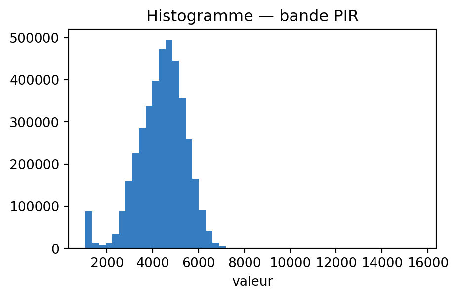

import rioxarray as rxr, numpy as np, matplotlib.pyplot as plt
img = rxr.open_rasterio('../RGBNIR_of_S2A.tif')
vals = img.sel(band=4).values.ravel() # bande PIR
fig, ax = plt.subplots(figsize=(5, 3))
ax.hist(vals, bins=50, color="#357cc0")
ax.set_title("Histogramme — bande PIR"); ax.set_xlabel("valeur")
plt.show()